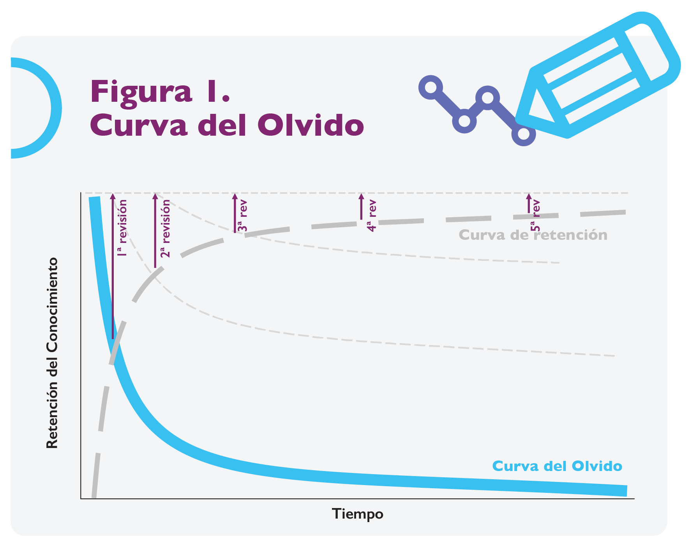

¿CÓMO LO SÉ?
La protección
del acto médico
Dr. Hermes Ilarraza Lomelí
Consejo Mexicano de Cardiología A.C., Instituto
Nacional de Cardiología Ignacio Chávez
hermes_ilarraza@yahoo.com
A lo largo de su historia, la humanidad ha logrado colocarse como una de las especies dominantes del planeta, debido a diversos acontecimientos como la oposición del pulgar, el descubrimiento del fuego, el trabajo en equipo, la escritura, el método científico y la cibernética.1 No obstante, fue seguramente la regulación de su comportamiento lo que ofreció mayor estabilidad y crecimiento comunitario. Dentro de los elementos reguladores podemos identificar a la ética, las leyes, normas, políticas y reglamentos, entre otros.
La comprensión del fenómeno de salud-enfermedad ha variado desde una visión mágico-religiosa hasta la perspectiva de una ciencia médica objetiva y sistemática.2 El acto médico contemporáneo es producto de miles de años de evolución, donde el binomio salud-enfermedad tiene una explicación física y racional.3 En la medicina ha habido áreas con grandes transformaciones, mientras que otras apenas han evolucionado y unas más no han experimentado cambio alguno.4 Los avances más notables en los últimos dos siglos han sido promovidos por la adquisición de nuevos conocimientos, la aplicación de nuevas tecnologías, la consolidación de la ciencia médica, el estudio de la epidemiología y de patologías emergentes, la revolución bioética, la evolución de los procesos de enseñanza, nuevas formas de financiamiento y la globalidad.
Sin embargo, el acto médico no se ejerce por libre albedrío y también ha sido objeto de regulación a lo largo de la historia. En Mesopotamia, el primer código penal y civil de la humanidad (código de Hammurabi), destinó siete de sus reglas para sancionar la práctica de la medicina, donde el médico podía ser recompensado al tener éxito en una cirugía (ley 215) o ser castigado con la amputación de una de sus manos tras haber provocado la muerte o la pérdida de un ojo a un hombre libre y rico (ley 218).5 La expresión primum non nocere (lo primero es no hacer daño) nos recuerda que toda intervención podría provocar algún perjuicio, el cual debe de ser ponderado y prevenido.6
Si un médico ofrece un tratamiento a un enfermo y este mejora, pudo haber sido por la intervención, pero también por la recuperación natural de la enfermedad, en nada influida por la maniobra. Por otro lado, el fracaso después de un acto médico puede ser iatrógeno o secundario, inevitablemente a la enfermedad. Recíprocamente, si el médico no interviene y el paciente mejora, esto se deberá sin duda, a la recuperación inherente de este último. Finalmente, en el caso de que el paciente empeore o muera en ausencia de una intervención, podría ser parte de la historia natural de la enfermedad, pero también se le puede imputar al médico algún grado de descuido o inacción. ¿Cómo reconocer la verdad?
La seguridad del acto médico depende, por un lado, de las características de los agentes de salud y, por el otro, del paciente, e incrementa su eficacia y seguridad al ser realizado por personal médico y paramédico competente que cuente con las herramientas adecuadas y el ambiente propicio. Así, existen diversos tipos de autoridades en materia de educación y salud que son las responsables de regularlo.
La relación dialéctica entre una intervención médica y el resultado en el estado de salud del enfermo genera varios escenarios.
La lex artis médica es el conjunto de reglas para el ejercicio de la medicina, contenido en la literatura universalmente aceptada, sobre el cual se establecen los medios ordinarios para la atención médica y los criterios para su empleo. Esta se encuentra en constante renovación y en nuestro país está integrada por: literatura magistral, biblio-hemerografía indexada, informes científicos de investigaciones emitidos por instituciones ad hoc, publicaciones que demuestren mérito científico y validez estadística, criterios que fije la Secretaría de Salud, criterios emitidos por la Comisión Nacional de Arbitraje Médico, farmacopea de los Estados Unidos Mexicanos, diccionarios de especialidades farmacéuticas y los criterios emitidos por las comisiones de investigación, trasplantes, ética y bioseguridad de la Secretaría de Salud.7
En su preparación, el futuro médico recibe un proceso inicial de instrucción teórico-práctica en la escuela de medicina, el cual es complejo y prolongado. Al final, el estudiante recibe un título universitario que certifica el dominio, con cierto grado de profundidad, de la generalidad del quehacer médico.
La necesidad de atención a la salud ha llevado a buscar acortar los tiempos de preparación del personal médico y paramédico. Esto logrará un mayor número de egresados en menor tiempo, pero si no se invierte más en la calidad (tiempo, experiencia, etc.), los conocimientos y destrezas podrían verse mermados.11 A nivel universitario, el Consejo Mexicano para la Acreditación de la Educación Médica (COMAEM) ha publicado su listado de 158 instituciones, donde más del 30% de las escuelas de medicina no tienen acreditación vigente.
Si el médico egresado estudia una especialidad, deberá demostrar ante sus pares que cuenta con la pericia necesaria para llevar a cabo una práctica médica segura y eficaz, al cumplir con suficiencia la evaluación y certificación por parte de los Consejos acreditados, con fundamento en los parámetros dictados por la lex artis médica.
El éxito en la certificación del médico especialista radica, entre otras cosas, en la interacción estrecha y persistente entre los Consejos de Especialidades Médicas y las diversas universidades. Los planes de estudio para la preparación de los médicos residentes deben profundizar y ampliar cada uno de los aspectos considerados en la lex artis médica, ya que esta dicta lo que un médico debe saber y saber hacer. Las especialidades predominantemente prácticas, donde la destreza manual es crucial, requieren que el alumno cumpla también con un número suficiente de estudios, tanto en complejidad como en variedad.
La evaluación académica de un médico es constante, incluso antes de ingresar a la escuela de medicina (examen de ingreso), lo que le irá acreditando en los diversos niveles de estudio, pero al término de su educación, deberá comprobar que sabe lo que un médico especialista debe saber, mediante la certificación con base en la lex artis médica. Además, el especialista requiere seguir aprendiendo mediante actividades de educación médica continua que refrenden su certificación inicial y no ser víctima de la curva del olvido de Ebbinghaus. El proceso de evaluación y certificación de especialistas busca discriminar con precisión al especialista en cuestión quien, claramente deberá demostrar el dominio superior de destrezas y conocimientos, en comparación con un médico de un grado inmediato inferior. Así, si un examen ideal de cardiología fuera aplicado a un cardiólogo, este debería de aprobarlo sin problemas y con una alta calificación, en comparación con un médico internista quien debería reprobar el examen por mucho. Así, podemos decir que el especialista principiante va mejorando su curso de pensamiento desde una asociación de ideas muy reducida que recurre con frecuencia a la adivinación, mecanismo que suele evolucionar a un contenido más activo pero disperso y un razonamiento hipotético deductivo. El médico de nivel intermedio ya elabora asociaciones de causalidad y al convertirse en un médico experto, reconocerá claramente esquemas y patrones con base en un proceso inductivo.
La evaluación y certificación recurrente de los médicos especialistas, universidades y establecimiento de atención para la salud hacen que el acto médico sea más homogéneo y con un nivel adecuado de seguridad y eficacia. Sin embargo, esta regulación no es totalmente a prueba de fallos y requiere de una restructuración de procesos permanente. Si bien pudieran existir estas anomalías, la evaluación sistemática por pares calificados, basados en procesos constantes de reingeniería, ofrecen una certificación óptima, actualizada, objetiva y transparente en prácticamente todos los casos. La regulación de la práctica médica fundamentada en la ética y la lex artis médica ofrece altos estándares de calidad y seguridad para los pacientes, pero también para los médicos especialistas y las instituciones educativas y de salud.
En resumen, tratar de comprender fielmente el proceso salud-enfermedad ha tomado miles de años y seguimos intentándolo. En el proceso de atención siempre hay dos perspectivas diferentes: el médico (proveedor) y el paciente (usuario). El dominio con maestría de la ciencia médica va más allá del difícil aprendizaje universitario, se alcanza y se consolida mediante la práctica profesional y la educación médica continua. Los éxitos y las fallas en el proceso de atención de la salud dependen inicialmente de la formación y pericia vigente del operador, así como la planificación y reingeniería de todo el sistema en su conjunto. El éxito de la medicina moderna se basa en el trabajo en equipo, promovido por la demanda de atención, alcanzado mediante la ciencia y el humanismo, y regulado por los códigos de conducta.
Sin embargo, existe un fenómeno en pedagogía conocido como la curva del olvido, donde una persona puede comprender algo nuevo al cien por ciento y de manera casi inmediata lo comienza a olvidar, llegando a tener una retención de 60% a los 20 minutos y de solamente el 15% a 7 días de haberlo estudiado.8
Este proceso entrópico suele ser contrarrestado mediante el uso de revisiones o “repasos” de lo aprendido, estrategia que requiere de mayor esfuerzo y que, a mediano y largo plazo, logrará conservar el conocimiento al reducir la pendiente de la curva del olvido, transformándola en una curva asintótica de retención. (Figura 1)9
Salta a la vista que la primera evaluación educativa al término del programa universitario no indica necesariamente el nivel de competencia del alumno, quien requerirá de un soporte educativo sostenido más allá del título profesional, para acceder a un nivel sólido de competencia o de dominio con maestría.
La enseñanza de la medicina se mantiene en constante cambio, desde la cercanía de un discípulo a un maestro hasta la enseñanza virtual a distancia, donde podemos encontrar “tutoriales” en plataformas digitales o utilizar maniquíes y otros simuladores inteligentes para desarrollar destrezas médicas. Además, los objetivos docentes han migrado de la memorización y el aprendizaje basado en problemática, al aprendizaje basado en competencias y en el ser. Existe mucha controversia sobre el modelo educativo actual, que para algunos es sumamente práctico y sencillo, mientras que, para otros, los conocimientos se sustituyen por competencias, la inteligencia racional por la emocional y la ciencia por el utilitarismo.10